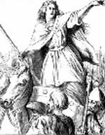

Keltlerin savaşçı kraliçesi Boudica’nın dış görünümü bile Romalıların korkması için yeterliydi. Dizlerine kadar uzanan kızıl saçları vardı. Boğumlu altın bir gerdanlık takıyordu. Romalı tarihçilere göre yanında her zaman korkunç bir kılıç taşıyordu ve “görünümü dehşet vericiydi.”

Romalıların gerçekten de Boudica’dan korkmak için haklı gerekçeleri vardı. 61 yılında Roma lejyonları ile kanlı, acımasız bir savaşa girişmişti. Romalı işgalcileri İngiltere’den atmak isteyen Boudica ve müttefikleri, Roma yerleşimlerini yakıp yağmaladılar. Londra’yı yerle bir ettiler ve binlerce Romalıyı öldürdüler.
Boudica için Romalılarla olan savaş hem Keltlerin onur mücadelesi hem de kişisel bir intikam davasıydı. Yirmi yıldan daha az bir süre önce Romalılar İngiltere’yi işgal etmişler ve pek çok Kelt kabilesini kontrol altına almışlardı. Bu durum Romalılara karşı yerlilerde yaygın bir kinin ortaya çıkmasına neden olmuştu. Romalı askerler aynı zamanda Boudica’nın henüz genç kız olan iki kızına tecavüz ederek onları öldürmüşler ve bu Boudica’nın işgalcilere karşı kişisel bir kin beslemesine de sebep olmuşlardı.
Boudica’nın kabilesi Doğu Anglia’nın bir bölümüne yerleşmişti. Burası Londra’nın kuzeydoğusunda kalıyordu. Boudica tahtı, kocası Prasutagus’tan devralmıştı. Ne var ki Romalılar krallığın bir kadına geçmesini kabul etmediler ve tahtta hak iddia ettiler.
Savaş 61 yılında Roma’nın İngiltere valisi Galler’de bir takım askeri faaliyetler yürüttüğü sırada başladı. Valinin yokluğunu fırsat bilen Boudica, diğer Kelt savaşçıları ile birleşti. Roma’nın Britanya’daki başkenti olan Colchester’e saldırdılar. Pek çok şehri yakıp Londra’yı yağmaladılar. Kıyıma ilişkin muhtemelen taraflı olan Roma kayıtları, on binlerce Romalının öldürüldüğünü söylemektedir.
Keltlerin organize olmayan barbarlar olduğunu düşünen Romalılar savunmasız yakalanmışlardı. Valinin isyanı bastırmak için alelacele Londra’ya dönmesi gerekti. Boudica kaçmak zorunda kaldı. Daha sonra intihar ettiğine inanılmaktadır.
Ek Bilgiler
1- Boudica’nın mezarı bilinmemektedir. BBC’ye göre onun Londra’da gömülü olduğuna dair popüler bir mit ortaya çıkmıştır. Söylendiğine göre mezarı King’s Cross demiryolu istasyonundaki 9 numaralı platformun altında bulunmaktadır.
2- Boudica isyan ettiği sırada Camulodunum olarak bilinen Colchester, Roma’nın İngiltere’deki ana yönetim merkeziydi. Eski adı Londinium olan Londra ise 100 yılında başkent olmuştur.
3- Bazı İngiliz savaş gemilerine Kelt kraliçesinin adı verilmiştir. Bunlardan biri olan HMS Boedica, Almanlar tarafından 1944 yılında batırılan bir İngiliz destroyeridir.